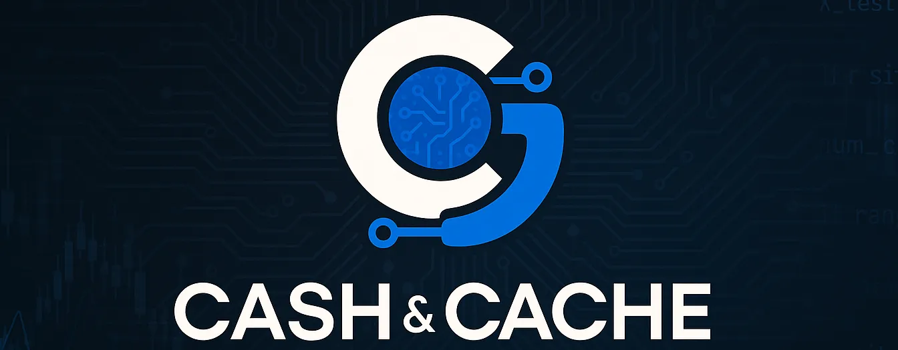

How AI builders automate content production, security reviews, newsletter analytics, and backend workflows — without writing a single line of code.
"These aren't demos. They're systems running real businesses, serving real audiences, handling real workflows that break if the automation fails."— Raghav Mehra, Cash & Cache